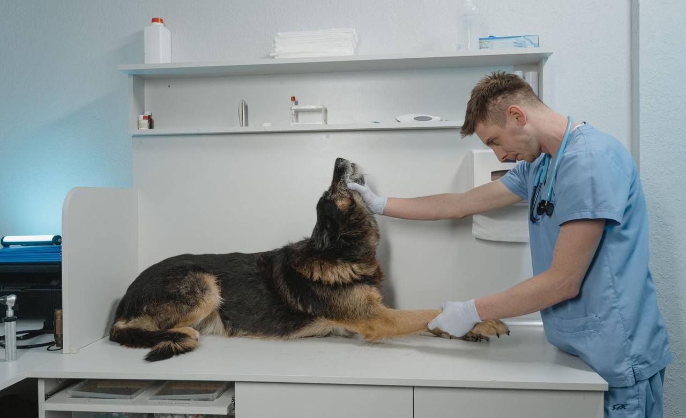
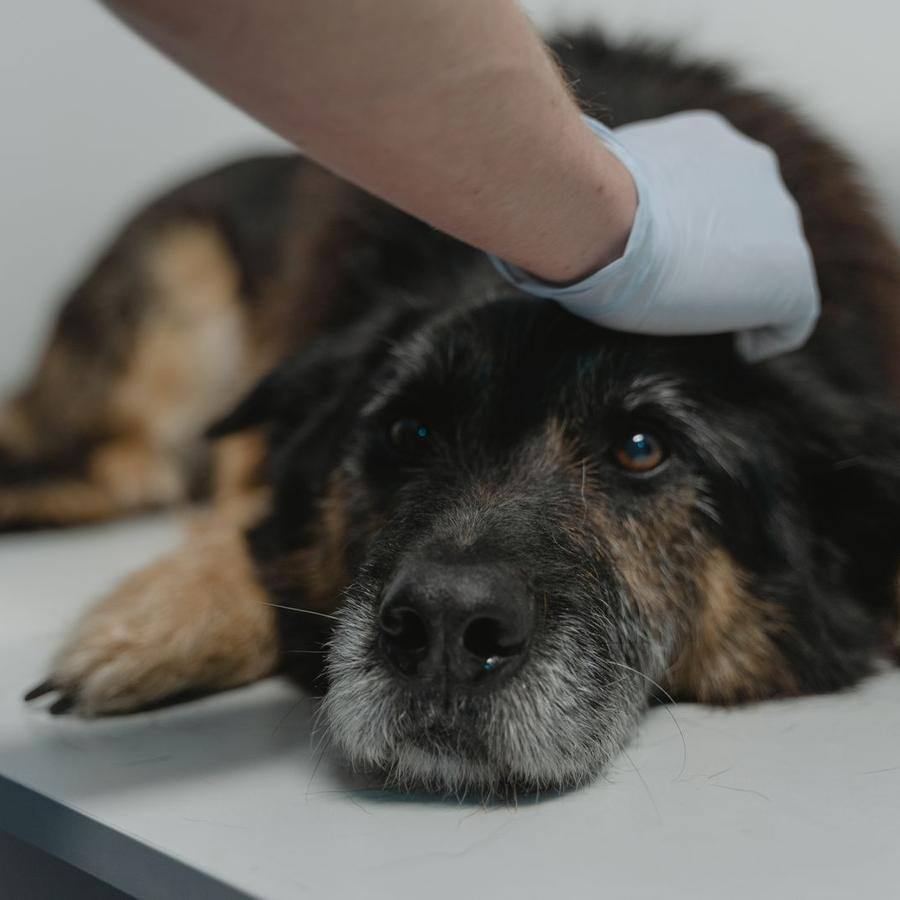
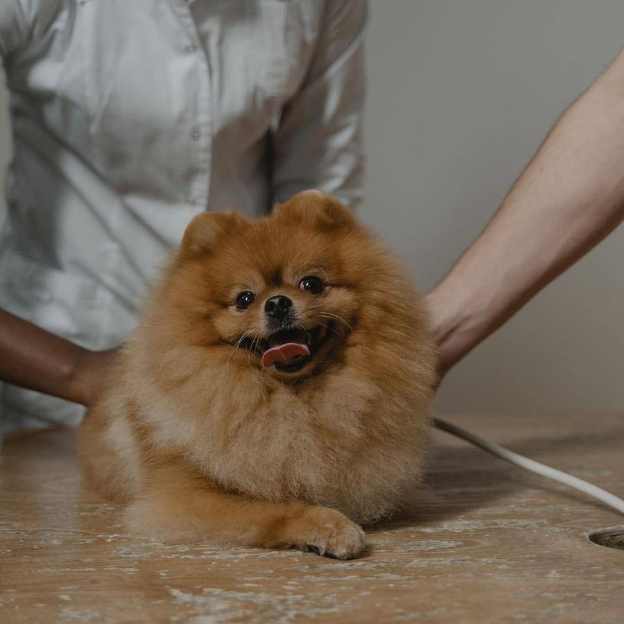
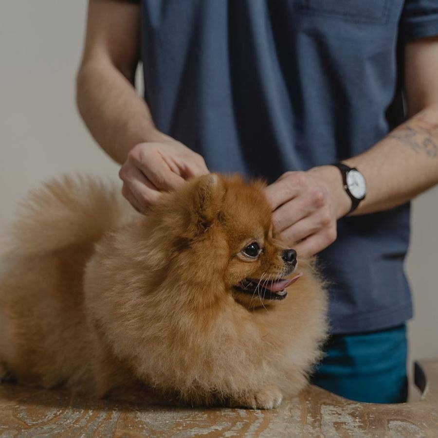

Clínica veterinaria · Altabix, Elche
Veterinarios cerca, cuando los necesitas
Clínica de barrio con quirófano, rayos y laboratorio propios. Te explicamos cada prueba y su precio antes de hacerla, y te recordamos las vacunas para que no se te pase ninguna.



Por qué Clínica Veterinaria Huellas
Lo que nos diferencia
Todo en la clínica
Quirófano, rayos X, ecógrafo y laboratorio: sin ir de un sitio a otro.
Precio antes de empezar
Antes de cada prueba te decimos para qué sirve y cuánto cuesta.
Recordatorio de vacunas
Te avisamos por WhatsApp cuando toca vacuna o desparasitación.
Sin estrés
Sala de espera separada para perros y gatos, y premios en cada visita.
Clínica veterinaria
Servicios
Precios con IVA. Si hace falta algo más, te lo explicamos y lo decides tú.
Consultas
Consulta general
35 €Exploración completa y consejo. 20 minutos.
favoritoRevisión geriátrica
65 €Para mayores de 8 años, con análisis básico.
Consulta de comportamiento
50 €Miedos, ansiedad o agresividad. 45 minutos.
Prevención
Vacuna anual
45 €Polivalente y rabia, con cartilla.
favoritoPlan cachorro
120 €Vacunas, desparasitación y chip el primer año.
favoritoDesparasitación
desde 15 €Interna y externa, según el peso.
Plan de salud
19 €/mesConsultas, vacunas y descuentos todo el año.
nuevo
Pruebas y cirugía

Análisis de sangre
55 €Resultados en el día.
Ecografía
60 €Esterilización
consultarCon preoperatorio y revisión.
Limpieza dental
desde 120 €Con sedación y pulido.
Galería
Pásate a verlo
Fotos del local y de lo que hacemos. Pulsa para verlas en grande.
Reseñas
Lo que dicen de nosotros
Reseñas de ejemplo: en tu web van las tuyas, enlazadas a tu ficha de Google.
- Silvia R.hace 1 semana5 de 5
Llevé a mi perra de urgencia y me atendieron enseguida. Me explicaron todo con calma.
- Óscar M.hace 3 semanas5 de 5
El plan cachorro nos ha salido redondo. Nos avisan de cada vacuna por WhatsApp.
- Marina T.hace 1 mes5 de 5
Mi gato odia ir al veterinario y aquí sale tranquilo. Sala separada de perros: un acierto.
- Fran L.hace 2 meses4 de 5
Muy buenos profesionales. A veces hay que esperar un poco aunque tengas cita.
- Patricia G.hace 4 días5 de 5
Precio claro antes de cada prueba. Así da gusto.
Pedir cita
Tu cita en tres pasos
- 1
Cuéntanos quién viene
Perro o gato, edad y qué le pasa.
- 2
Elige día y hora
Solo salen los huecos libres.
- 3
Te esperamos
Trae la cartilla si la tienes.
El equipo
Quién te atiende
Dra. Laura Pérez
Directora · Cirugía
Colegiada 1234. Dieciocho años operando en Elche.
Dr. Javier Coves
Medicina interna
Especialista en análisis y ecografía.
Ainhoa
Auxiliar
La que consigue que hasta el gato más arisco se deje.
Visítanos
Dónde estamos
Horario
| Lunes | 9:30 – 14:00 y 16:30 – 20:30 |
|---|---|
| Martes | 9:30 – 14:00 y 16:30 – 20:30 |
| Miércoles | 9:30 – 14:00 y 16:30 – 20:30 |
| Jueves | 9:30 – 14:00 y 16:30 – 20:30 |
| Viernes | 9:30 – 14:00 y 16:30 – 20:30 |
| Sábado | 10:00 – 13:30 |
| Domingo | Cerrado |
Cómo llegar
- Aparcamiento en la puerta para bajar al perro
- Bus urbano línea R, parada Altabix
- Acceso sin escalones para transportines
Contacto
¿Atendéis urgencias?
Dentro del horario, siempre. Fuera de él te decimos a qué clínica 24 horas acudir.
¿Hace falta cita para vacunar?
Es mejor, así no esperas. Pídela arriba en un minuto.
¿Atendéis exóticos?
Conejos y hurones, sí. Para reptiles y aves te derivamos.
¿Se puede pagar a plazos?
Para cirugías, sí. Pregúntanos.
¿Quieres una web así para tu negocio?
Clínica Veterinaria Huellas es un negocio inventado: esta página es una plantilla de ejemplo. La adapto a tu negocio con tus fotos, tus precios, tus reseñas y tu forma de reservar. Pruébala tal cual: la reserva funciona, pero no envía nada a nadie.
- Carta o servicios por categorías, galería y reseñas
- Reserva o cita en pocos pasos, con aviso por WhatsApp
- Lista para el móvil, rápida y sin cookies de terceros
- Aviso legal, privacidad y cookies incluidos